Synopsis/Demo
Hundreds of years ago King Arthur sealed himself away under Britain, waiting to spring forth at its moment of most dire need.... well, that came and went.
Britain has moved to Mars and you wake up a few hundred years too late, your former friends rather disgruntled at this, need you to prove yourself worthy of calling yourself King Arthur.
Battle through 3 boss fights to reclaim what you have lost; Excalibur, your Crown and the respect of your closest friend.
Boss Mechanics
Lady of the Lake
Phase 1
The Lady of the Lake in this phase is swift and enjoys keeping the player on their feet, with a few projectiles and a dash.
- Aqua Shot: Fires a fast orb of water that homes towards the player.
- Water Geyser: A slow moving projectile that will home towards the player, with the aim to keep the player moving around.
- Teleport Dash: The Lady of the Lake doesn't enjoy sitting still for too long, and will dash to another location, this keeps the player moving frequently.
Phase 2
During this phase the Lady of the Lake, enjoys staying airborn, utilising her rising rocks mechanic the player can jump and strike her.
- Rising Rocks: Creates rocks being risen by geysers, the geysers will hurt the player so staying above them is key. Utilise these rocks as platforms to hurt the boss.
- Spinning Geyser: The Lady of the Lake will create twin geysers from her palms, and spin causing damage to the player, this is a deterent causing the player to time their strikes.
Morgana
Phase 1
Morgana utilises her tentacles to strike the player, additionally her barage of leeches will keep the player running.
- Leeches: Spawns sentient leeches that will chase the player, dealing damage when they hit the player.
- Tentacles: Slams the ground and the player if they remain close to Morgana.
Phase 2
During this phase Morgana's tentacle slams are more frequent and she unleashes larger leeches as well, causing higher damage.
- Giant Leeches: Slower than normal leeches but provide more damage, in combination with the smaller leeches the player should avoid these.
Merlin
Phase 1
Merlin utilises magic orbs and requires the player to strike back the orbs focuses in timing.
- Magic orbs: Spawns magic orbs that home towards the player, striking them will send them back towards Merlin.
Phase 2
Merlin has Acsended, Merlin ascended now fires stronger projectiles but also summons tentacles and leeches from Morgana.
- Tentacles: These flail and try to strike the player.
 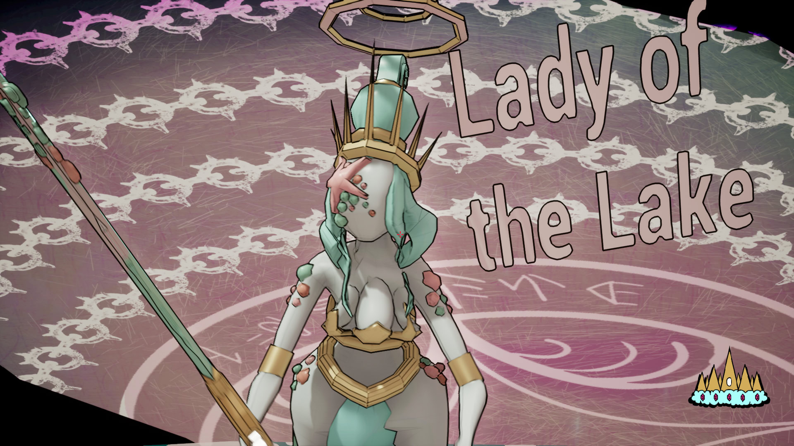
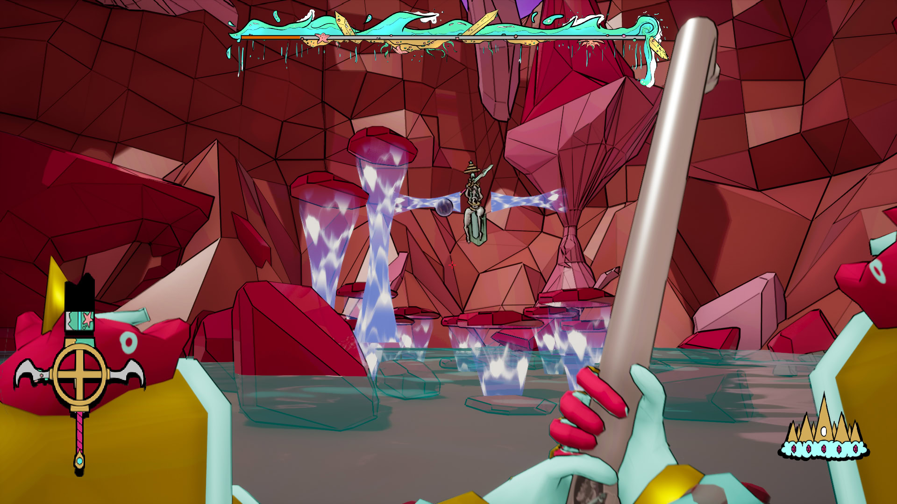
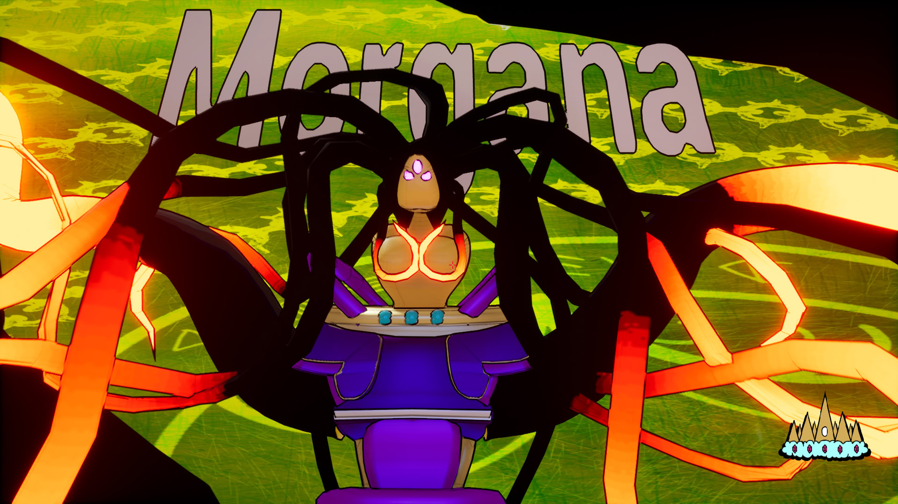
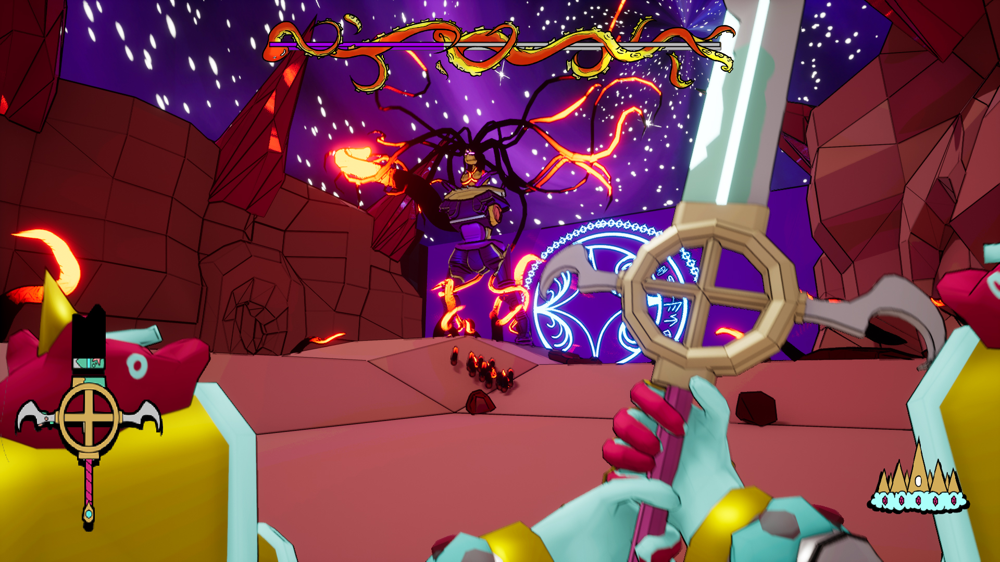
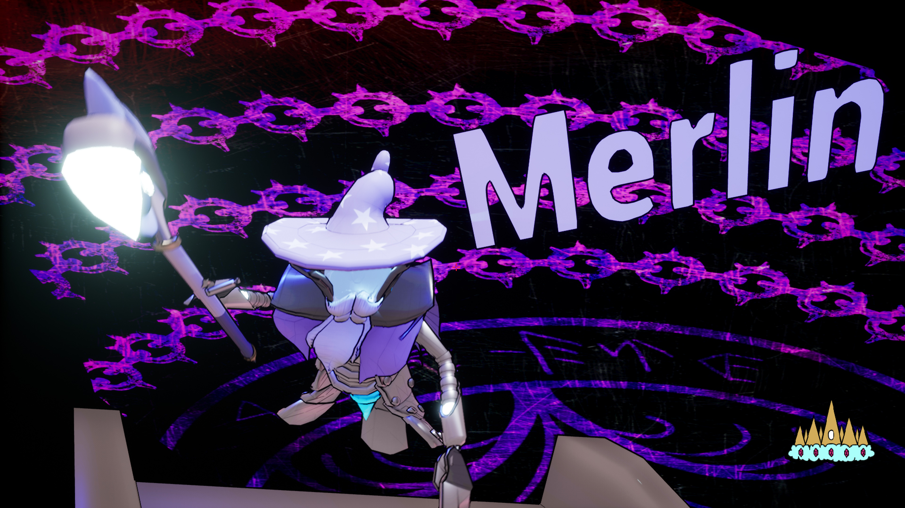
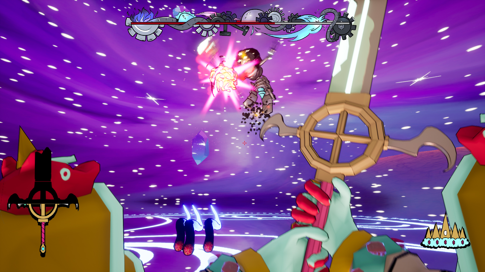
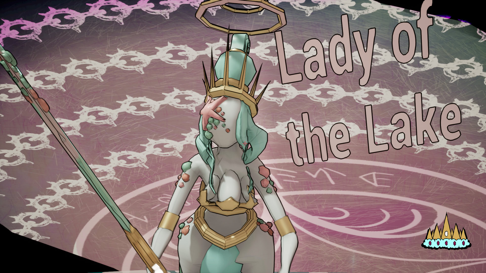
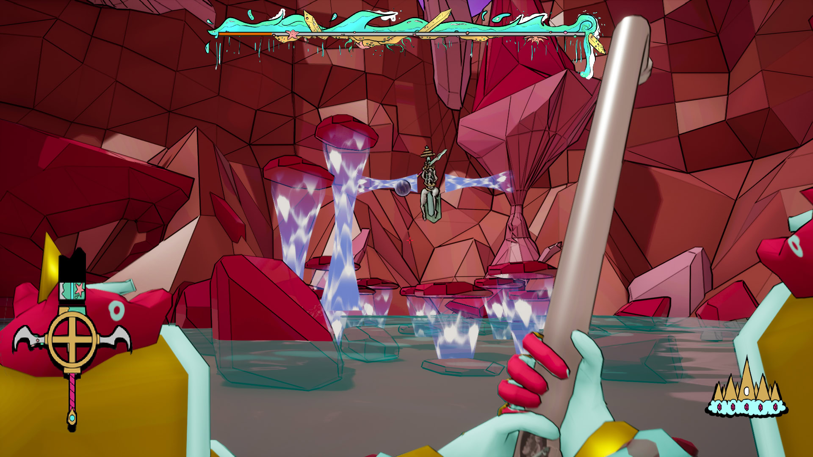
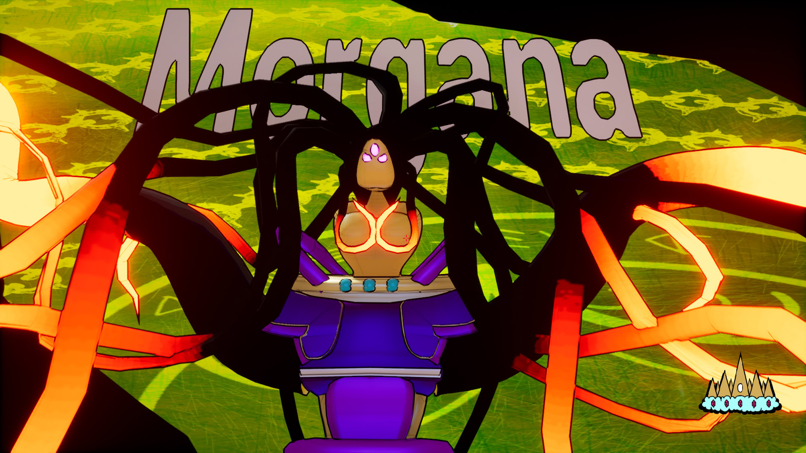
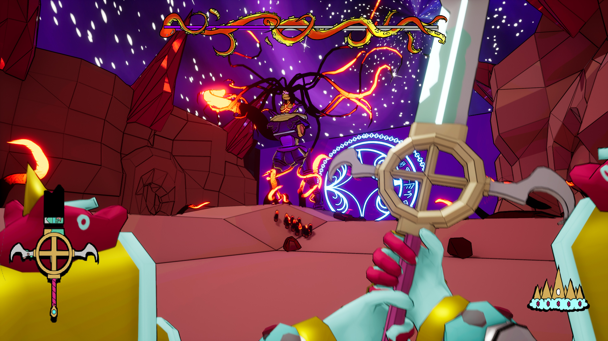
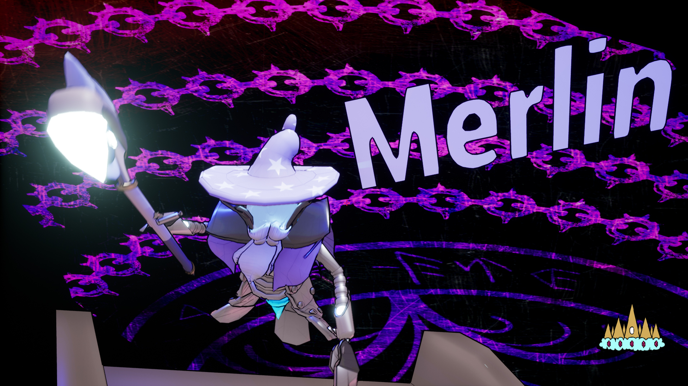
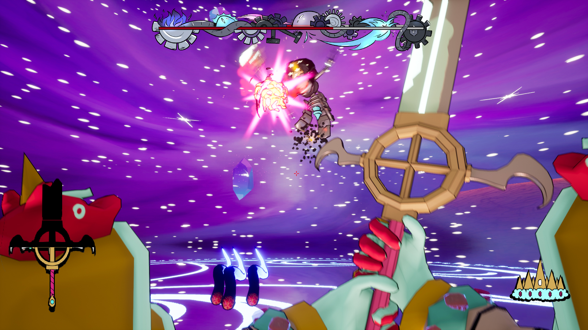


 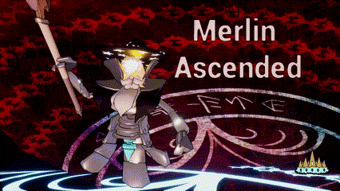
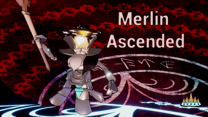